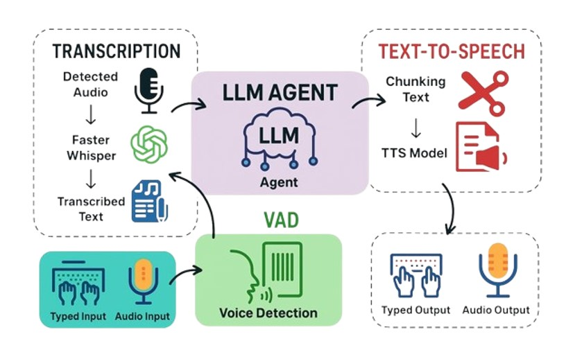
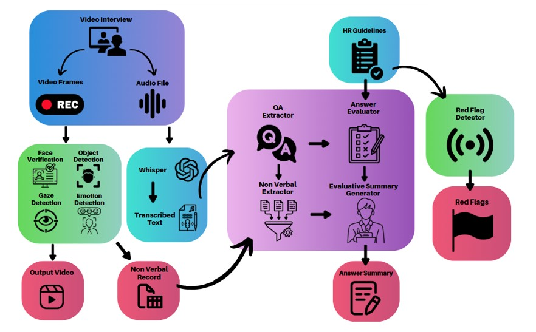

Interview Bot — Multimodal Conversational AI System
Industry Project CureMD AI Engineer
The Interview Bot is a fully autonomous multimodal AI agent that conducts professional interviews via audio, video, and text. It leverages LLM reasoning, speech synthesis, and computer vision to create a seamless interviewer experience — complete with real-time interaction, transcription, and behavioral analysis. The system was designed to be modular, scalable, and adaptable for corporate HR, medical, or educational assessments.
1) Problem Statement
Traditional digital interviews rely only on form-based questionnaires or scripted video prompts. The goal here was to create an interactive, human-like interviewer capable of understanding audio and visual cues, conducting dynamic conversations, and analyzing both verbal and non-verbal signals for objective assessment.
2) System Goals
- Build a multimodal conversational system capable of audio, text, and video interaction.
- Enable real-time interviews using LiveKit for streaming and low-latency voice feedback.
- Develop an automated post-processing agent that evaluates responses, emotions, and behaviors.
- Ensure modular design — interchangeable LLMs, STT, TTS, and vision modules.
3) Tech Stack
- Core: Python, JavaScript, CSS, HTML
- LLMs: LLaMA via AWS Bedrock, Qwen Omni 2.5 & Qwen 3:32B (for multimodal reasoning)
- Speech: Whisper API (STT), Kokoro TTS API (low-latency voice synthesis)
- Realtime: LiveKit (WebRTC) for streaming audio/video
- Vision: YOLOv8s, ViT, Emonet, MediaPipe Face Mesh (for gaze and emotion)
- Utilities: FFMPEG for video/audio extraction, MongoDB for logs, AWS Plugins for orchestration
4) System Architecture

5) Architectural Approach
We explored two main paradigms:
- Cascaded Pipeline: STT → LLM → TTS, sequential processing for modular control and debugging.
- End-to-End (Omni Models): Direct audio-text reasoning for lower latency but less interpretability.
The final design used a hybrid cascaded pipeline to balance transparency, latency, and model flexibility.
6) LiveKit Integration
LiveKit was used to manage all voice and video sessions. We replaced Deepgram/ElevenLabs-style plugins with custom STT and TTS endpoints that mirror their APIs for compatibility. This allowed full control over transcription, response timing, and latency optimization. The bot joins a LiveKit meeting as a participant — listening, transcribing, and speaking dynamically using Kokoro TTS.
7) Interview Flow
- 1️⃣ Greeting: Bot starts with a friendly introduction and explains the interview structure.
- 2️⃣ Dynamic Questioning: The LLM adjusts follow-ups based on candidate’s responses and tone.
- 3️⃣ Non-Verbal Observation: Vision modules monitor face, gaze, and expressions in parallel.
- 4️⃣ Summarization: At the end, responses and visuals are sent for analytics and scoring.
8) Key Design Components
STT Module
- Uses a Whisper-compatible endpoint for real-time transcription.
- Handles punctuation restoration and speaker diarization.
- Optimized to maintain <1s delay for live interaction.
LLM Dialogue Engine
- Backed by LLaMA/Qwen multimodal models.
- Understands context, HR guidelines, and follow-up structure.
- Prompts engineered for politeness, professionalism, and empathy.
TTS Module
- Powered by Kokoro API, outperforming other TTS systems (ElevenLabs, Nari, ChatterBox) in latency and pronunciation.
- Supports multiple voice profiles and emotion intensity levels.
Frontend & Logging
- Built using LiveKit Meet frontend templates.
- Stores interview recordings locally using a custom Egress handler (bypassing AWS-only storage).
- Logs all LLM messages and confidence metrics for audit trails.
9) Post-Processing Architecture

10) Post-Processing Modules
- Face Verification: Face encodings with cosine similarity for identity validation.
- Object Detection: YOLOv8s filters “person” class and tracks movement consistency.
- Gaze Detection: MediaPipe landmarks calculate pupil ratios → classify gaze (center/left/right/up/down).
- Emotion & Confidence: ViT + Emonet → detect emotions and valence-arousal → map to confidence levels.
- Transcript Generation: Whisper large-v3 → cleaned .txt and .srt files with timestamps.
- Q/A Extraction: Extracts question–answer pairs and aligns timestamps.
- Red Flag Detector: Scans transcript for HR-specified alert phrases and ethical violations.
- Summary Generator: Combines non-verbal and verbal metrics into an overall performance report.
11) Results & Evaluation
- 96% accuracy in detecting intent and producing relevant responses.
- Average latency reduced by 40% vs plugin-based frameworks.
- Video analytics achieved robust emotion tracking with consistent gaze mapping.
- Comprehensive evaluation reports auto-generated for HR review.